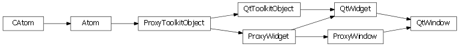
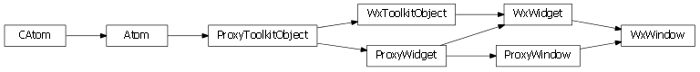

Bases: enaml.widgets.widget.Widget
A top-level Window component.
A Window component is represents of a top-level visible component with a frame decoration. It may have at most one child widget which is dubbed the ‘central widget’. The central widget is an instance of Container and is expanded to fit the size of the window.
A Window does not support features like MenuBars or DockPanes, for such functionality, use a MainWindow widget.
A static set of windows being used by the application. A window adds itself to this list when it is initialized, and removes itself when it is destroyed. This allows toplevel windows with no parent to persist without any other strong references.
The titlebar text.
The initial size of the window. A value of (-1, -1) indicates to let the toolkit choose the initial size.
An enum which indicates the modality of the window. The default value is ‘non_modal’.
If this value is set to True, the window will be destroyed on the completion of the closed event.
The title bar icon.
Whether or not the window remains on top of all others.
An event fired when the window is closed. This event is triggered by the proxy object when the window is closed.
Windows are invisible by default.
A reference to the ProxyWindow object.
An overridden initializer method.
This method adds the window to the static set of Windows.
An overridden destructor method.
This method removes the window from the static set of Windows.

Bases: enaml.qt.qt_widget.QtWidget, enaml.widgets.window.ProxyWindow
A Qt implementation of an Enaml ProxyWindow.
A reference to the toolkit widget created by the proxy.
Find and return the central widget child for this widget.
| Returns: | result (QWidget or None) – The central widget defined for this widget, or None if one is not defined. |
|---|

Bases: enaml.wx.wx_widget.WxWidget, enaml.widgets.window.ProxyWindow
A Wx implementation of an Enaml ProxyWindow.
A reference tot he toolkit widget created by the proxy.
Find and return the central widget child for this widget.
| Returns: | result (wxWindow or None) – The central widget defined for this widget, or None if one is not defined. |
|---|
Set the visibility state on the underlying widget.
This override sets the modality to false when hiding the window and enabled it when showing the window (if requested).
Ensure the widget is visible.
This override forwards to the ‘set_visible’ method so that the window modality is handled properly.
Ensure the widget is hidden.
This override forwards to the ‘set_visible’ method so that the window modality is handled properly.